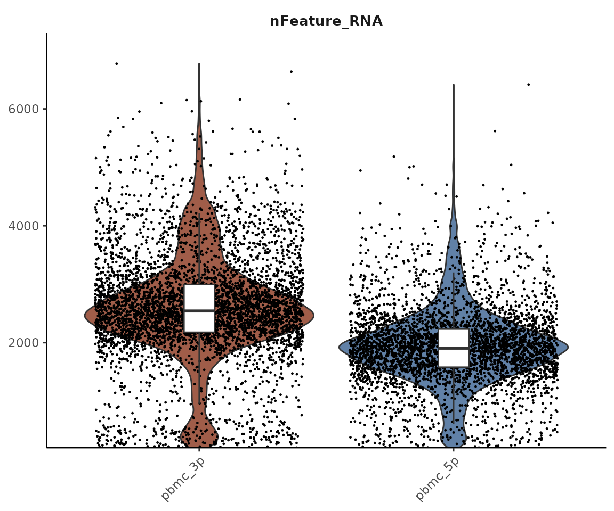
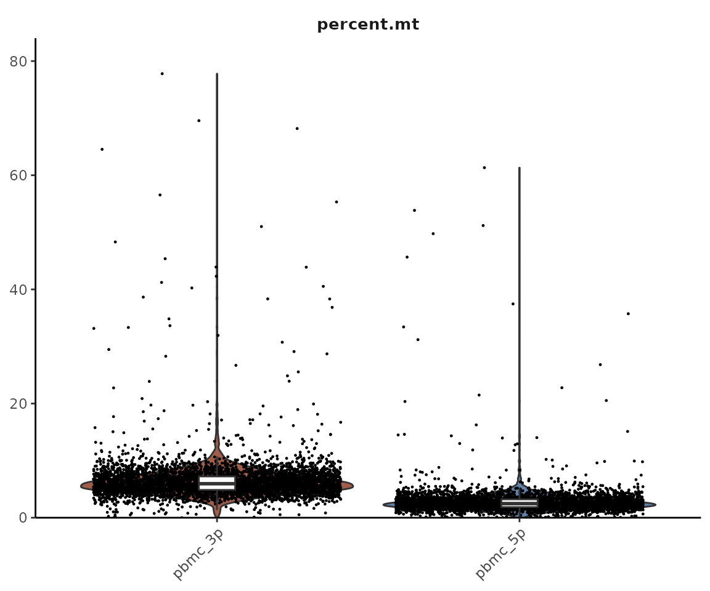
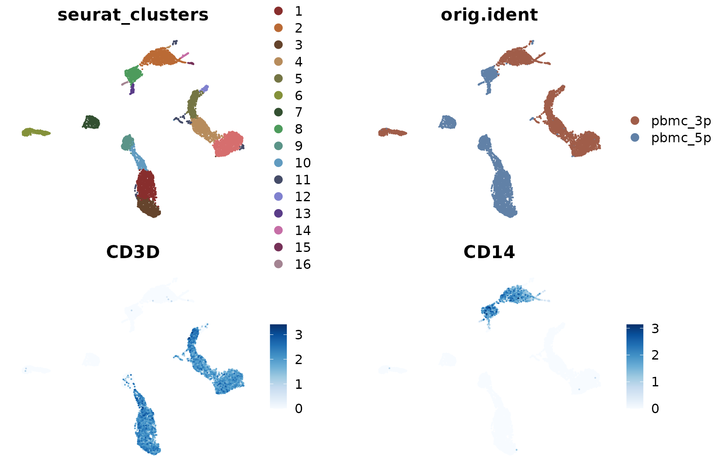
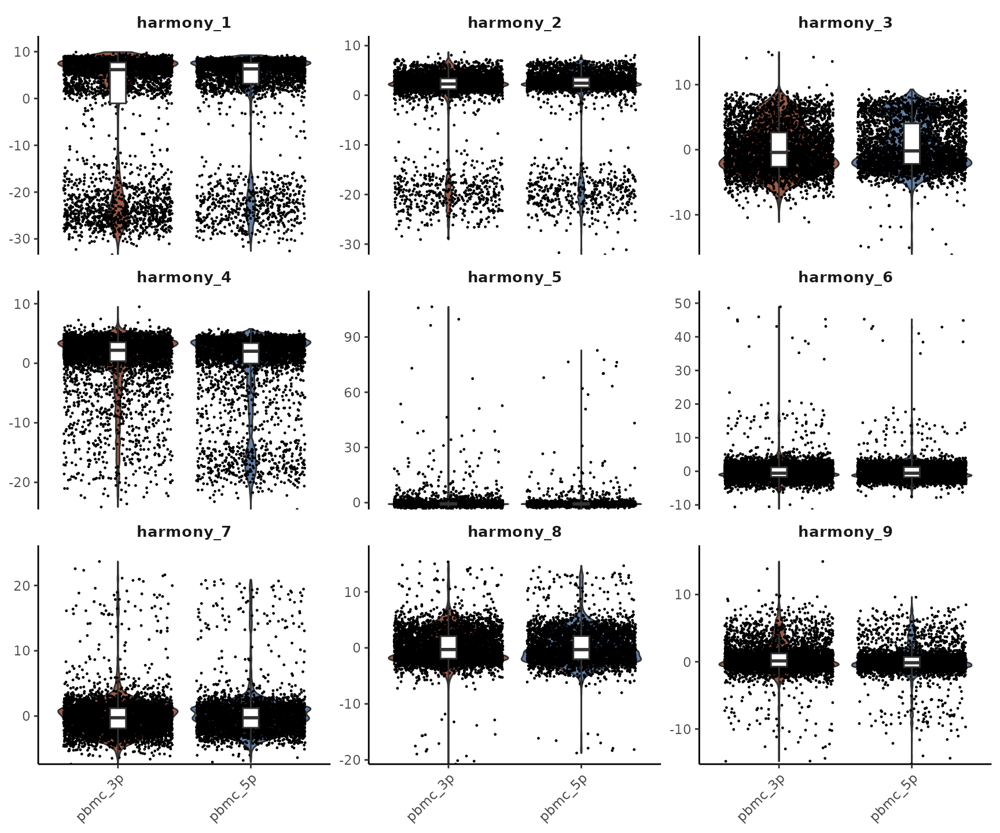
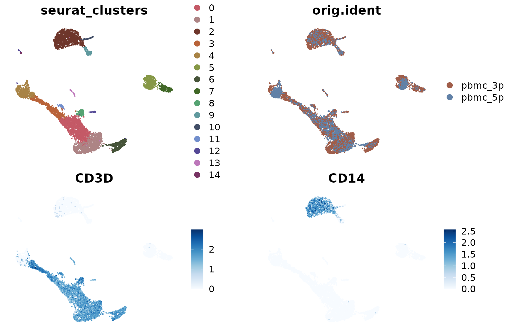

Lesson 5: Core scRNA-seq Workflow Enhancements
Yichao Hua
2024-11-29
5.Core-Enhancement.RmdIntroduction
In Lesson 2, we explored the basic workflow of single-cell analysis using a small PBMC dataset. While this served as an excellent introduction to the field, it only scratched the surface of what’s possible with single-cell RNA sequencing (scRNA-seq) analysis. In this lesson, we’ll delve deeper into various aspects of the workflow, exploring more advanced techniques and considerations.
We’ll cover the following topics:
- Merging multiple datasets
- Detailed quality control (nGene, percent.mt)
- Doublet removal
- Data integration
- Cell-Cycle Scoring and Regression
- Alternative normalization methods (SCTransform)
1. Merging Multiple Datasets
In real-world scenarios, we often need to analyze multiple datasets together. This could be due to various reasons, such as comparing different conditions, time points, or even different technologies used on the same sample.
For this exercise, we’ll use public datasets from the 10X Genomics website. These datasets are from the same sample but were processed using different technologies: the 3’ kit and the 5’ kit. These two approaches capture genes differently, which can lead to some variation in the results.
First, let’s set your working directory to where we’ll store all course materials. If you followed Lesson 1, this would be:
# Set working directory to the course folder created in Lesson 1
# If you used a different location, replace this path with your chosen directory
setwd("~/Documents/single-cell-course")Load the necessary libraries and read in our data:
library(Seurat)
library(SeuratExtend)
# Load 3' dataset
pbmc_3p <- Read10X("data/pbmc_ACDA/3p_ACDA/filtered_feature_bc_matrix/")
pbmc_3p <- CreateSeuratObject(pbmc_3p, project = "pbmc_3p", min.features = 200, min.cells = 1)
# Load 5' dataset
pbmc_5p <- Read10X("data/pbmc_ACDA/5p_ACDA/filtered_feature_bc_matrix/")
pbmc_5p <- CreateSeuratObject(pbmc_5p, project = "pbmc_5p", min.features = 200, min.cells = 1)
# Merge the datasets
pbmc_merge <- merge(pbmc_3p, pbmc_5p, add.cell.ids = c("pbmc_3p","pbmc_5p"))
pbmc_merge <- JoinLayers(pbmc_merge) # This step is required for Seurat v5
pbmc_merge## An object of class Seurat
## 27910 features across 8845 samples within 1 assay
## Active assay: RNA (27910 features, 0 variable features)
## 1 layer present: countsBy merging these datasets, we can compare and analyze them together.
The add.cell.ids parameter adds a prefix to cell names to
distinguish their origin after merging.
2. Detailed Quality Control (nGene, percent.mt)
In our previous lesson, we used a basic quality control criterion:
min.features = 200, which retains cells with more than 200
detected genes. However, this is quite a low threshold, chosen because
the previous dataset had a low sequencing depth. In practice, these
thresholds need to be adjusted based on the specific characteristics of
your data.
Let’s start by examining the distribution of detected genes (nGene) in our merged dataset:
VlnPlot2(pbmc_merge, features = "nFeature_RNA", group.by = "orig.ident")
We can observe that the 3’ and 5’ technologies detect different numbers of genes. This difference is due to the nature of these technologies:
- 3’ Technology: This approach sequences the 3’ end of mRNA transcripts. It typically detects more genes and is more efficient, but it cannot perform TCR/BCR sequencing.
- 5’ Technology: This method sequences from the 5’ end of mRNA transcripts. It allows for TCR/BCR sequencing, making it particularly useful when studying different lymphocyte clones.
Setting nGene Thresholds
Cells with very low nGene are considered low quality and should be removed. The exact threshold depends on various factors including the sample type, cell type, and sequencing technology. Here are some general suggestions:
- For 3’ sequencing: Usually set above 1000
- For 5’ sequencing: Slightly lower, around 800-1000
- For single nuclei sequencing: Even lower, typically 500-800
However, these are just general references. It’s crucial to examine the distribution in your data (using plots like the one above) to make an informed decision. For our current dataset, we’ll use 1000 as the lower threshold.
We also need to set an upper limit for nGene. While a higher nGene generally indicates better sequencing quality, extremely high values often represent anomalies such as doublets (two cells captured and sequenced as one). A common upper threshold is between 7500 and 8000 genes.
Note that this upper limit may need adjustment for certain technologies (e.g., Smart-seq2) that typically have higher sequencing depth, or for cell types (like fibroblasts or certain tumor cells) that naturally express more genes.
Mitochondrial Gene Percentage (percent.mt)
Another important quality control metric is the percentage of mitochondrial genes (percent.mt). A high percentage of mitochondrial reads often indicates low-quality or dying cells. This is because as cells die, their cytoplasmic mRNA degrades, but mitochondrial RNA is more stable, leading to a higher proportion of mitochondrial reads.
Let’s calculate and visualize the percent.mt for our dataset:
pbmc_merge[["percent.mt"]] <- PercentageFeatureSet(pbmc_merge, pattern = "^MT-")
VlnPlot2(pbmc_merge, features = "percent.mt", group.by = "orig.ident")
In this code, "^MT-" indicates genes starting with “MT-”
(for human data). For mouse data, you would use "^mt-".
Typically, we set a threshold of percent.mt < 20%. For single nuclei data, which shouldn’t contain mitochondria, a stricter threshold like percent.mt < 5% is often used.
Applying Quality Control Filters
Now that we’ve discussed our quality control metrics, let’s apply these filters to our data:
## [1] "Before filtering: 8845 cells"
# Apply filters
pbmc_merge <- subset(
pbmc_merge,
subset = nFeature_RNA > 1000 &
nFeature_RNA < 7500 &
percent.mt < 20
)
# After filtering
print(paste("After filtering:", ncol(pbmc_merge), "cells"))## [1] "After filtering: 8256 cells"By applying these filters, we’ve removed low-quality cells and potential doublets from our dataset, providing a cleaner foundation for downstream analysis.
3. Doublet Removal
In our previous section, we used a simple upper limit on nGene to
remove potential doublets. However, this method is relatively crude.
More sophisticated algorithms have been developed to identify and remove
doublets with greater precision. One such tool is
scDblFinder.
scDblFinder is a machine learning-based tool that
identifies doublets in single-cell RNA sequencing data. It works by
simulating artificial doublets from the existing data and then using
these simulations to train a model that can distinguish real cells from
doublets based on their gene expression profiles.
Before we begin, let’s ensure we have the necessary packages installed:
if (!require("BiocManager", quietly = TRUE))
install.packages("BiocManager")
if (!require("scDblFinder", quietly = TRUE))
BiocManager::install("scDblFinder")Here’s how we can use scDblFinder in our analysis:
library(scDblFinder)
# Convert Seurat object to SingleCellExperiment
sce <- as.SingleCellExperiment(pbmc_merge)
# Run scDblFinder
sce <- scDblFinder(sce, samples = "orig.ident")
# Add scDblFinder results to our Seurat object
pbmc_merge$scDblFinder.class <- sce$scDblFinder.class
# View doublet predictions
table(pbmc_merge$scDblFinder.class)##
## singlet doublet
## 7908 348
# Remove predicted doublets
pbmc_merge <- subset(pbmc_merge, subset = scDblFinder.class == "singlet")
# Check the number of cells after doublet removal
print(paste("After doublet removal:", ncol(pbmc_merge), "cells"))## [1] "After doublet removal: 7908 cells"For most standard single-cell RNA-seq analyses, using
scDblFinder for doublet removal is a recommended practice
that will improve your data quality. However, it’s important to keep in
mind that like any computational method, it’s not 100% accurate. There
are a few considerations to keep in mind:
-
False positives: Some cell types might be mistakenly identified as doublets. For example:
- Proliferating cells, which naturally have higher RNA content
- Rare cell types (like plasmacytoid dendritic cells, or pDCs) that may have unique gene expression profiles
Biological relevance: In some cases, what appears computationally as a “doublet” might be a biologically relevant state, such as cell-cell interactions or cells undergoing cell fusion.
Dataset specificity: The accuracy of doublet detection can vary depending on the characteristics of your dataset, including the cell types present and the sequencing technology used.
If you’re particularly interested in cell types that might be at risk of being misclassified as doublets, it’s advisable to carefully review the results before removing cells. You might consider:
- Checking which cell types are disproportionately classified as doublets
- Comparing the gene expression profiles of cells classified as doublets vs. singlets
Remember, the goal of doublet removal is to improve data quality, but it shouldn’t come at the cost of losing biologically relevant information. Always interpret the results in the context of your biological question and experimental design.
4. Data Integration
Now that we’ve performed quality control and doublet removal, let’s proceed with the traditional Seurat workflow on our merged PBMC dataset:
pbmc_merge <- NormalizeData(pbmc_merge)
pbmc_merge <- FindVariableFeatures(pbmc_merge)
pbmc_merge <- ScaleData(pbmc_merge)
pbmc_merge <- RunPCA(pbmc_merge)
pbmc_merge <- RunUMAP(pbmc_merge, dims = 1:10)
pbmc_merge <- FindNeighbors(pbmc_merge, dims = 1:10)
pbmc_merge <- FindClusters(pbmc_merge, resolution = 0.5)## Modularity Optimizer version 1.3.0 by Ludo Waltman and Nees Jan van Eck
##
## Number of nodes: 7908
## Number of edges: 272296
##
## Running Louvain algorithm...
## Maximum modularity in 10 random starts: 0.9334
## Number of communities: 17
## Elapsed time: 0 seconds
DimPlot2(pbmc_merge, features = c("seurat_clusters", "orig.ident", "CD3D", "CD14"), theme = NoAxes())
Upon examining the results, we notice that the clustering is significantly influenced by the different techniques used (3’ vs 5’ sequencing). This effect is known as batch effect. Ideally, we want our clustering to reflect the genuine cell type differences across all samples, rather than technical differences between batches.
To address this issue, we can use a method called Harmony for batch effect removal (or data integration). Harmony is an algorithm that adjusts for batch effects in single-cell data while preserving biological variation.
The principle behind Harmony is relatively straightforward: After running PCA, some principal components (PCs) reflect differences between cell clusters, while others represent differences between samples or batches. Harmony corrects for this by removing the PCs associated with batch differences while retaining those that represent genuine biological variation between cell types. This way, when we subsequently run UMAP and find clusters, the results will be based primarily on cell type differences rather than batch effects.
Let’s see how to implement Harmony:
First, if you haven’t installed Harmony, you can do so with the following code:
if (!require("harmony", quietly = TRUE))
install.packages("harmony")Now, let’s run Harmony (note that all steps up to and including RunPCA remain the same as before):
library(harmony)## Loading required package: Rcpp
pbmc_merge <- RunHarmony(pbmc_merge, group.by.vars = "orig.ident")## Transposing data matrix## Initializing state using k-means centroids initialization## Harmony 1/10## Harmony 2/10## Harmony 3/10## Harmony 4/10## Harmony 5/10## Harmony converged after 5 iterationsAfter running Harmony, we proceed with the usual workflow, but now using the Harmony-corrected dimensions:
pbmc_merge <- RunUMAP(pbmc_merge, dims = 1:10, reduction = "harmony")
pbmc_merge <- FindNeighbors(pbmc_merge, dims = 1:10, reduction = "harmony")
pbmc_merge <- FindClusters(pbmc_merge, resolution = 0.5)## Modularity Optimizer version 1.3.0 by Ludo Waltman and Nees Jan van Eck
##
## Number of nodes: 7908
## Number of edges: 276741
##
## Running Louvain algorithm...
## Maximum modularity in 10 random starts: 0.8982
## Number of communities: 12
## Elapsed time: 0 seconds
DimPlot2(pbmc_merge, features = c("seurat_clusters", "orig.ident", "CD3D", "CD14"), theme = NoAxes())
Now we can see that the clustering is based on cell types, and the differences between the two samples (3’ and 5’ sequencing) have been largely eliminated.
To better understand what Harmony has done, let’s compare the outputs of PCA and Harmony:
head(Embeddings(pbmc_merge, reduction = "pca"), 3)## PC_1 PC_2 PC_3 PC_4 PC_5
## pbmc_3p_AAACCCAAGTGGTGGT-1 8.026468 -0.5569947 -9.762277 2.5274767 0.8005453
## pbmc_3p_AAACGAACACGTCGTG-1 5.573758 2.1691034 -5.162184 -0.4959971 0.2222917
## pbmc_3p_AAACGAAGTACCGGCT-1 8.495268 -0.5732680 -7.473360 2.3103625 -0.1895022
## PC_6 PC_7 PC_8 PC_9 PC_10
## pbmc_3p_AAACCCAAGTGGTGGT-1 -2.0585799 3.759818 -3.4910666 1.7315773 -0.7347548
## pbmc_3p_AAACGAACACGTCGTG-1 0.4529012 -1.762161 2.7161359 0.5657139 0.7199774
## pbmc_3p_AAACGAAGTACCGGCT-1 -1.6952750 2.065426 -0.5903696 1.7199383 0.3588536
## PC_11 PC_12 PC_13 PC_14
## pbmc_3p_AAACCCAAGTGGTGGT-1 -1.0875434 0.1700239 0.4207566 0.03125937
## pbmc_3p_AAACGAACACGTCGTG-1 -0.3842285 2.3215834 -2.2742613 0.82687791
## pbmc_3p_AAACGAAGTACCGGCT-1 -1.5259350 2.1005151 -0.8343805 1.95330595
## PC_15 PC_16 PC_17 PC_18
## pbmc_3p_AAACCCAAGTGGTGGT-1 -0.5672855 -0.4333132 0.08478484 2.323176
## pbmc_3p_AAACGAACACGTCGTG-1 -0.9649320 -2.1877979 -0.12708595 1.235451
## pbmc_3p_AAACGAAGTACCGGCT-1 -0.4316831 0.1932790 0.25442805 1.317927
## PC_19 PC_20 PC_21 PC_22
## pbmc_3p_AAACCCAAGTGGTGGT-1 -0.6686046 0.03036024 -0.0941112 0.1672879
## pbmc_3p_AAACGAACACGTCGTG-1 -0.8574119 0.03821086 1.2165595 0.8631614
## pbmc_3p_AAACGAAGTACCGGCT-1 -0.9668927 -1.37593441 -0.7858357 0.2565052
## PC_23 PC_24 PC_25 PC_26
## pbmc_3p_AAACCCAAGTGGTGGT-1 -0.9431425 -1.0961104 1.5384187 -2.2628330
## pbmc_3p_AAACGAACACGTCGTG-1 0.4129460 0.4193254 0.3886109 0.7913914
## pbmc_3p_AAACGAAGTACCGGCT-1 -1.1181363 -0.4406358 -0.4530322 0.3490909
## PC_27 PC_28 PC_29 PC_30
## pbmc_3p_AAACCCAAGTGGTGGT-1 -0.5962907 -1.2608390 -0.3187917 0.9369346
## pbmc_3p_AAACGAACACGTCGTG-1 0.2735535 0.4259994 -0.2572480 -0.8599530
## pbmc_3p_AAACGAAGTACCGGCT-1 -0.2951472 -0.5082128 -0.4150948 0.9005109
## PC_31 PC_32 PC_33 PC_34
## pbmc_3p_AAACCCAAGTGGTGGT-1 1.2749214 3.4092358 0.8348811 -0.0346970
## pbmc_3p_AAACGAACACGTCGTG-1 0.1665506 -0.8067949 -0.1263073 -0.5833165
## pbmc_3p_AAACGAAGTACCGGCT-1 1.3315582 0.3988518 0.2921252 -0.9007669
## PC_35 PC_36 PC_37 PC_38
## pbmc_3p_AAACCCAAGTGGTGGT-1 2.5667212 2.3171880 0.5490577 -1.13369946
## pbmc_3p_AAACGAACACGTCGTG-1 2.3531437 0.8391040 1.0686152 -1.89676424
## pbmc_3p_AAACGAAGTACCGGCT-1 -0.8700297 0.4757511 -0.3616716 0.01687375
## PC_39 PC_40 PC_41 PC_42
## pbmc_3p_AAACCCAAGTGGTGGT-1 -0.2095914 0.480441908 -2.7389293 0.2525975
## pbmc_3p_AAACGAACACGTCGTG-1 0.7896557 -2.035066291 -0.3943168 -0.5208215
## pbmc_3p_AAACGAAGTACCGGCT-1 0.9659524 -0.001937676 1.4530170 1.0012862
## PC_43 PC_44 PC_45 PC_46
## pbmc_3p_AAACCCAAGTGGTGGT-1 0.1412820 -1.73131972 -2.527521 -1.4119483
## pbmc_3p_AAACGAACACGTCGTG-1 0.5976390 0.38622614 -0.149614 1.5306139
## pbmc_3p_AAACGAAGTACCGGCT-1 0.3023768 0.08900624 -1.403962 0.0547492
## PC_47 PC_48 PC_49 PC_50
## pbmc_3p_AAACCCAAGTGGTGGT-1 -0.01225440 -0.2481923 -0.6904021 -0.07385215
## pbmc_3p_AAACGAACACGTCGTG-1 -1.68094773 0.6444774 -0.4056492 0.37459072
## pbmc_3p_AAACGAAGTACCGGCT-1 0.04912378 1.5050713 -1.5763721 0.47545033
head(Embeddings(pbmc_merge, reduction = "harmony"), 3)## harmony_1 harmony_2 harmony_3 harmony_4 harmony_5
## pbmc_3p_AAACCCAAGTGGTGGT-1 8.388242 1.335736 -4.8668592 4.084444 0.41571811
## pbmc_3p_AAACGAACACGTCGTG-1 6.167808 4.105549 -0.2162408 1.838270 -0.04784189
## pbmc_3p_AAACGAAGTACCGGCT-1 8.820353 1.359890 -2.4252238 3.893617 -0.54624121
## harmony_6 harmony_7 harmony_8 harmony_9
## pbmc_3p_AAACCCAAGTGGTGGT-1 -1.4299355 2.1941987 -3.4002057 0.4277696
## pbmc_3p_AAACGAACACGTCGTG-1 0.4370867 -2.3376343 1.5153617 -0.4987599
## pbmc_3p_AAACGAAGTACCGGCT-1 -1.0283993 0.5093963 -0.5792729 0.3888035
## harmony_10 harmony_11 harmony_12 harmony_13
## pbmc_3p_AAACCCAAGTGGTGGT-1 -0.9714052 -0.7872133 -0.2519855 0.3722271
## pbmc_3p_AAACGAACACGTCGTG-1 0.7019349 -0.3863685 1.3163239 -2.0239064
## pbmc_3p_AAACGAAGTACCGGCT-1 0.1175696 -1.2006624 1.5922227 -0.7882126
## harmony_14 harmony_15 harmony_16 harmony_17
## pbmc_3p_AAACCCAAGTGGTGGT-1 -0.2408347 -0.7151454 0.3595161 0.2865837
## pbmc_3p_AAACGAACACGTCGTG-1 0.2982565 -0.7589811 -1.2856362 0.3511975
## pbmc_3p_AAACGAAGTACCGGCT-1 1.6059979 -0.5914752 1.0340767 0.4834976
## harmony_18 harmony_19 harmony_20 harmony_21
## pbmc_3p_AAACCCAAGTGGTGGT-1 2.636532 -0.4950449 0.32679250 0.3099240
## pbmc_3p_AAACGAACACGTCGTG-1 1.543012 -0.5290196 0.02989942 1.3705860
## pbmc_3p_AAACGAAGTACCGGCT-1 1.599963 -0.7014958 -1.07391170 -0.3530896
## harmony_22 harmony_23 harmony_24 harmony_25
## pbmc_3p_AAACCCAAGTGGTGGT-1 0.2147109 -0.6313436 -1.00809759 1.3825846
## pbmc_3p_AAACGAACACGTCGTG-1 0.6656945 0.2965954 0.09918623 0.4108313
## pbmc_3p_AAACGAAGTACCGGCT-1 0.2676497 -0.8437084 -0.43827684 -0.5232299
## harmony_26 harmony_27 harmony_28 harmony_29
## pbmc_3p_AAACCCAAGTGGTGGT-1 -1.8557766 -0.5722115 -0.98298000 -0.16484030
## pbmc_3p_AAACGAACACGTCGTG-1 0.6545480 0.2271289 -0.08663837 -0.03217491
## pbmc_3p_AAACGAAGTACCGGCT-1 0.6936615 -0.3396854 -0.31663298 -0.30187817
## harmony_30 harmony_31 harmony_32 harmony_33
## pbmc_3p_AAACCCAAGTGGTGGT-1 1.0043036 1.1697774 2.9939500 0.9802589
## pbmc_3p_AAACGAACACGTCGTG-1 -0.7063055 0.4585552 -0.5126894 -0.3914611
## pbmc_3p_AAACGAAGTACCGGCT-1 0.8235596 1.2546143 0.1458695 0.4756327
## harmony_34 harmony_35 harmony_36 harmony_37
## pbmc_3p_AAACCCAAGTGGTGGT-1 0.06597315 2.4718136 2.3226729 0.5578287
## pbmc_3p_AAACGAACACGTCGTG-1 -0.52521668 2.1049645 0.8880769 1.0138088
## pbmc_3p_AAACGAAGTACCGGCT-1 -0.83771104 -0.8171414 0.4976160 -0.4034560
## harmony_38 harmony_39 harmony_40 harmony_41
## pbmc_3p_AAACCCAAGTGGTGGT-1 -1.19440293 -0.4690139 0.42072567 -2.7500936
## pbmc_3p_AAACGAACACGTCGTG-1 -1.78737338 0.9218403 -1.98124213 -0.3375522
## pbmc_3p_AAACGAAGTACCGGCT-1 0.05253346 0.6830896 -0.01472767 1.4352334
## harmony_42 harmony_43 harmony_44 harmony_45
## pbmc_3p_AAACCCAAGTGGTGGT-1 0.1544133 0.1317209 -1.6108667 -2.55868404
## pbmc_3p_AAACGAACACGTCGTG-1 -0.4857095 0.4854964 0.3541641 -0.03231285
## pbmc_3p_AAACGAAGTACCGGCT-1 0.9027680 0.2622781 0.1967017 -1.48418850
## harmony_46 harmony_47 harmony_48 harmony_49
## pbmc_3p_AAACCCAAGTGGTGGT-1 -1.46082294 -0.10673104 -0.1552405 -0.7432192
## pbmc_3p_AAACGAACACGTCGTG-1 1.54188352 -1.64739830 0.6040680 -0.4226623
## pbmc_3p_AAACGAAGTACCGGCT-1 -0.01742599 -0.04189954 1.6258599 -1.6174858
## harmony_50
## pbmc_3p_AAACCCAAGTGGTGGT-1 -0.01808169
## pbmc_3p_AAACGAACACGTCGTG-1 0.24020904
## pbmc_3p_AAACGAAGTACCGGCT-1 0.51006150You’ll notice that they have the same shape. This is because Harmony essentially corrects the original PC matrix. To visualize this correction more clearly, let’s use Violin Plots to compare the first few PCA and Harmony dimensions:


As we can see, the PCs that were previously correlated with the
orig.ident (i.e., showed clear differences between 3’ and
5’ samples) have been corrected. The Harmony-corrected PCs now primarily
retain information about differences between cell types, rather than
differences between sequencing techniques.
This integration step is crucial when working with multiple datasets or batches, as it allows us to focus on the biological differences of interest rather than technical variations between samples or batches. However, it’s important to use this technique judiciously and always consider whether the differences between your samples might be biologically relevant rather than just technical noise.
Let’s save the current Seurat object as an RDS file:
saveRDS(pbmc_merge, file = "rds/pbmc_merge.rds")5. Cell-Cycle Scoring and Regression
When cells are in a state of division, they highly express cell cycle-related genes. These genes have such a strong signal that in unsupervised clustering, highly proliferating cells often form their own cluster, regardless of their original cell type. For example, in lymphocyte analysis, unsupervised clustering might identify various CD8, CD4 subgroups and NK cells, along with a cluster of mitotic cells. While this is often acceptable, there might be cases where you’re particularly interested in understanding which cell types these mitotic cells originally belonged to. In such situations, we need methods to mitigate the confounding effects of cell cycle genes.
This part of our tutorial is based on the Seurat vignette on cell cycle analysis: https://satijalab.org/seurat/articles/cell_cycle_vignette
Let’s start by calculating cell cycle scores:
# Load cell cycle genes
s.genes <- cc.genes$s.genes
g2m.genes <- cc.genes$g2m.genes
# Calculate cell cycle scores
pbmc_merge <- CellCycleScoring(pbmc_merge, s.features = s.genes, g2m.features = g2m.genes)
# View the results
head(pbmc_merge@meta.data)## orig.ident nCount_RNA nFeature_RNA percent.mt
## pbmc_3p_AAACCCAAGTGGTGGT-1 pbmc_3p 6764 2301 7.140745
## pbmc_3p_AAACGAACACGTCGTG-1 pbmc_3p 5860 2212 6.621160
## pbmc_3p_AAACGAAGTACCGGCT-1 pbmc_3p 5616 2049 5.359687
## pbmc_3p_AAACGAATCGGAGTGA-1 pbmc_3p 6736 2879 8.283848
## pbmc_3p_AAACGCTAGATTGGGC-1 pbmc_3p 8285 2840 7.314424
## pbmc_3p_AAACGCTCAAAGCGTG-1 pbmc_3p 6333 2292 5.337123
## scDblFinder.class RNA_snn_res.0.5 seurat_clusters
## pbmc_3p_AAACCCAAGTGGTGGT-1 singlet 0 0
## pbmc_3p_AAACGAACACGTCGTG-1 singlet 1 1
## pbmc_3p_AAACGAAGTACCGGCT-1 singlet 3 3
## pbmc_3p_AAACGAATCGGAGTGA-1 singlet 2 2
## pbmc_3p_AAACGCTAGATTGGGC-1 singlet 0 0
## pbmc_3p_AAACGCTCAAAGCGTG-1 singlet 0 0
## S.Score G2M.Score Phase
## pbmc_3p_AAACCCAAGTGGTGGT-1 0.012127603 0.00916068 S
## pbmc_3p_AAACGAACACGTCGTG-1 -0.004794661 0.02908853 G2M
## pbmc_3p_AAACGAAGTACCGGCT-1 0.006306741 0.03890038 G2M
## pbmc_3p_AAACGAATCGGAGTGA-1 -0.059615105 -0.04554034 G1
## pbmc_3p_AAACGCTAGATTGGGC-1 0.034862991 0.03874900 G2M
## pbmc_3p_AAACGCTCAAAGCGTG-1 -0.007030940 -0.02781424 G1After running CellCycleScoring, you’ll notice three new
columns in the meta.data: - S.Score: The score
for S phase - G2M.Score: The score for G2/M phase -
Phase: The determined cell cycle phase for each cell
Once we’ve calculated these scores, we can regress out their effects during the data scaling step:
The rest of the workflow remains unchanged (i.e., you would proceed
with RunPCA and subsequent steps as before).
Similarly, you can also regress out other confounding factors, such as the percentage of mitochondrial genes:
It’s important to note that while we’re introducing this concept in class, we won’t be running these steps in our current analysis. The reason for introducing Cell-Cycle Regression is that some tutorials recommend doing this routinely. However, based on personal experience, this regression isn’t always effective, and whether to perform this step depends on your specific research goals.
Here are some considerations when deciding whether to perform cell cycle regression:
Research Question: If your research focuses on cell cycle-related processes or if you’re studying tissues with varying proliferation rates, you might want to retain this information rather than regress it out.
Biological Relevance: In some cases, the cell cycle state might be biologically relevant to your study. For instance, if you’re studying a developmental process or cancer, differences in proliferation rates between cell types or conditions could be important.
Effect on Other Genes: Regressing out cell cycle effects can sometimes impact the expression patterns of other genes, potentially obscuring other biological signals of interest.
Visualization: Sometimes, having a distinct cluster of mitotic cells can be informative and acceptable in your analysis, providing a quick visual cue about proliferating cells in your sample.
Downstream Analysis: Consider how cell cycle regression might affect any downstream analyses you plan to perform, such as trajectory inference or differential expression analysis.
In my personal opinion, retaining a cluster of mitotic cells in your cell clustering results is often acceptable and can be informative. However, the decision to regress out cell cycle effects should be made based on your specific research questions and the nature of your biological system.
If you do decide to perform cell cycle regression, it’s a good practice to compare your results before and after regression to understand how it’s affecting your data. This can help you make an informed decision about whether to include this step in your final analysis pipeline.
6. Alternative Normalization Methods (SCTransform)
So far, we’ve been using the NormalizeData function for
data normalization. However, Seurat offers an alternative normalization
method called SCTransform (for more details, see https://satijalab.org/seurat/articles/sctransform_vignette).
SCTransform is a powerful normalization method that aims
to remove technical artifacts (e.g. Sequencing depth variations, Dropout
events) from scRNA-seq data while preserving biological heterogeneity.
It uses a regularized negative binomial regression model to normalize
and transform the data, accounting for sequencing depth and other
technical factors.
If you decide to use SCTransform, it replaces the combination of
NormalizeData, FindVariableFeatures, and
ScaleData steps in the traditional Seurat workflow. The
rest of the workflow remains largely unchanged. Here’s an example of how
to implement SCTransform:
if (!requireNamespace("glmGamPoi", quietly = TRUE))
BiocManager::install("glmGamPoi")
options(future.globals.maxSize = 1000 * 1024^2) # Increase to 1000 MiB
# Assuming pbmc_merge has been filtered for nGene and percent.mt, but not yet normalized
pbmc_merge <- SCTransform(pbmc_merge)
pbmc_merge <- RunPCA(pbmc_merge)
pbmc_merge <- RunHarmony(pbmc_merge, group.by.vars = "orig.ident", theta = 5) # Increase theta for stronger batch correction between 3' and 5' data
pbmc_merge <- RunUMAP(pbmc_merge, dims = 1:20, reduction = "harmony") # SCTransform often benefits from using more dimensions
pbmc_merge <- FindNeighbors(pbmc_merge, dims = 1:20, reduction = "harmony")
pbmc_merge <- FindClusters(pbmc_merge, resolution = 0.5)## Modularity Optimizer version 1.3.0 by Ludo Waltman and Nees Jan van Eck
##
## Number of nodes: 7908
## Number of edges: 279097
##
## Running Louvain algorithm...
## Maximum modularity in 10 random starts: 0.9110
## Number of communities: 15
## Elapsed time: 0 seconds
DimPlot2(pbmc_merge, features = c("seurat_clusters", "orig.ident", "CD3D", "CD14"), theme = NoAxes())
Both SCTransform and traditional normalization methods are widely accepted in the scRNA-seq analysis community. The authors of SCTransform argue that their method more effectively recovers true gene expression patterns and results in more refined clustering. However, there are some considerations to keep in mind:
Computational Resources: SCTransform typically requires more computational resources and storage space, especially for larger datasets.
Complex Microenvironments: For data from complex microenvironments (such as tumors), SCTransform may not always outperform traditional normalization methods.
Interpretability: The output of SCTransform can sometimes be less intuitive to interpret compared to traditional normalization methods.
Compatibility: Some downstream analysis tools might be optimized for traditionally normalized data, so it’s worth checking compatibility if you plan to use specialized analysis methods.
In my personal practice, I often run both methods and compare the results, choosing the one that provides clearer clustering, more distinct biological signatures, or better alignment with expected cell type distributions. This comparison can be particularly useful when working with a new dataset or biological system.
Here are some tips for comparing SCTransform with traditional normalization:
Visual Comparison: Compare UMAP plots from both methods. Look for clearer separation between cell types and more distinct clustering.
Marker Gene Expression: Check the expression patterns of known marker genes. The method that shows clearer and more biologically sensible patterns might be preferable.
Differential Expression Analysis: Perform differential expression analysis between clusters using both methods. Compare the results for biological relevance and consistency with prior knowledge.
Batch Effect Correction: If you’re working with multiple batches, compare how well each method handles batch effects.
Rare Cell Types: Pay attention to whether rare cell populations are better preserved or more clearly defined in one method versus the other.
Remember, the choice between SCTransform and traditional normalization should be based on your specific dataset, research questions, and computational resources. It’s always a good idea to critically evaluate the results and ensure they align with biological expectations and prior knowledge about your system.
7. Complete Workflow Summary
To conclude this lesson, let’s provide a comprehensive code block
that encompasses all the steps we’ve covered. We’ll present two main
workflows: one using the traditional NormalizeData
approach, and another using SCTransform. Both workflows
will include calculation of mitotic scores and regression of percent.mt,
with an option to regress out mitotic scores if desired.
Traditional Workflow
# Load necessary libraries
library(Seurat)
library(SeuratExtend)
library(harmony)
library(scDblFinder)
# Load and merge datasets
pbmc_3p <- Read10X("data/pbmc_ACDA/3p_ACDA/filtered_feature_bc_matrix/")
pbmc_3p <- CreateSeuratObject(pbmc_3p, project = "pbmc_3p", min.features = 500, min.cells = 1)
pbmc_5p <- Read10X("data/pbmc_ACDA/5p_ACDA/filtered_feature_bc_matrix/")
pbmc_5p <- CreateSeuratObject(pbmc_5p, project = "pbmc_5p", min.features = 500, min.cells = 1)
pbmc_merge <- merge(pbmc_3p, pbmc_5p, add.cell.ids = c("pbmc_3p","pbmc_5p"))
pbmc_merge <- JoinLayers(pbmc_merge)
# Quality control
pbmc_merge[["percent.mt"]] <- PercentageFeatureSet(pbmc_merge, pattern = "^MT-")
pbmc_merge <- subset(
pbmc_merge,
subset = nFeature_RNA > 1000 &
nFeature_RNA < 7500 &
percent.mt < 20
)
# Doublet removal
sce <- as.SingleCellExperiment(pbmc_merge)
sce <- scDblFinder(sce, samples = "orig.ident")
pbmc_merge$scDblFinder.class <- sce$scDblFinder.class
pbmc_merge <- subset(pbmc_merge, subset = scDblFinder.class == "singlet")
# Traditional normalization and scaling
pbmc_merge <- NormalizeData(pbmc_merge)
pbmc_merge <- FindVariableFeatures(pbmc_merge)
# Calculate cell cycle scores
s.genes <- cc.genes$s.genes
g2m.genes <- cc.genes$g2m.genes
pbmc_merge <- CellCycleScoring(pbmc_merge, s.features = s.genes, g2m.features = g2m.genes)
# Scale data, regressing out percent.mt
# To regress out mitotic score, add "S.Score" and "G2M.Score" to vars.to.regress
pbmc_merge <- ScaleData(pbmc_merge, vars.to.regress = c("percent.mt"))
# Dimension reduction and clustering
pbmc_merge <- RunPCA(pbmc_merge)
pbmc_merge <- RunHarmony(pbmc_merge, group.by.vars = "orig.ident")
pbmc_merge <- RunUMAP(pbmc_merge, dims = 1:10, reduction = "harmony")
pbmc_merge <- FindNeighbors(pbmc_merge, dims = 1:10, reduction = "harmony")
pbmc_merge <- FindClusters(pbmc_merge, resolution = 0.5)
# Visualization
DimPlot2(pbmc_merge, features = c("seurat_clusters", "orig.ident", "CD3D", "CD14"), theme = NoAxes())It’s worth mentioning that SeuratExtend provides a
convenient function called RunBasicSeurat. This function
integrates multiple steps including cell filtering, calculating
percent.mt, as well as NormalizeData,
FindVariableFeatures, ScaleData,
RunPCA, RunHarmony, RunUMAP,
FindNeighbors, and FindClusters into a single
step, making it easier to use. Here’s an example of how to use it:
# Load necessary libraries
library(Seurat)
library(SeuratExtend)
library(scDblFinder)
# Load and merge datasets
pbmc_3p <- Read10X("data/pbmc_ACDA/3p_ACDA/filtered_feature_bc_matrix/")
pbmc_3p <- CreateSeuratObject(pbmc_3p, project = "pbmc_3p", min.features = 500, min.cells = 1)
pbmc_5p <- Read10X("data/pbmc_ACDA/5p_ACDA/filtered_feature_bc_matrix/")
pbmc_5p <- CreateSeuratObject(pbmc_5p, project = "pbmc_5p", min.features = 500, min.cells = 1)
pbmc_merge <- merge(pbmc_3p, pbmc_5p, add.cell.ids = c("pbmc_3p","pbmc_5p"))
pbmc_merge <- JoinLayers(pbmc_merge)
# Doublet removal
sce <- as.SingleCellExperiment(pbmc_merge)
sce <- scDblFinder(sce, samples = "orig.ident")
pbmc_merge$scDblFinder.class <- sce$scDblFinder.class
pbmc_merge <- subset(pbmc_merge, subset = scDblFinder.class == "singlet")
# Run the integrated workflow
pbmc_merge <- RunBasicSeurat(
pbmc_merge,
spe = "human",
nFeature_RNA.min = 1000,
nFeature_RNA.max = 7500,
percent.mt.max = 20,
dims = 1:10,
resolution = 0.5,
vars.to.regress = "percent.mt",
harmony.by = "orig.ident"
)
# Visualization
DimPlot2(pbmc_merge, features = c("seurat_clusters", "orig.ident", "CD3D", "CD14"), theme = NoAxes())This approach simplifies the workflow significantly, allowing you to perform multiple analysis steps with a single function call. It’s particularly useful for standard analyses or when you want to quickly process your data using default parameters.
SCTransform Workflow
# Load necessary libraries
library(Seurat)
library(SeuratExtend)
library(harmony)
library(scDblFinder)
# Load and merge datasets
pbmc_3p <- Read10X("data/pbmc_ACDA/3p_ACDA/filtered_feature_bc_matrix/")
pbmc_3p <- CreateSeuratObject(pbmc_3p, project = "pbmc_3p", min.features = 500, min.cells = 1)
pbmc_5p <- Read10X("data/pbmc_ACDA/5p_ACDA/filtered_feature_bc_matrix/")
pbmc_5p <- CreateSeuratObject(pbmc_5p, project = "pbmc_5p", min.features = 500, min.cells = 1)
pbmc_merge <- merge(pbmc_3p, pbmc_5p, add.cell.ids = c("pbmc_3p","pbmc_5p"))
pbmc_merge <- JoinLayers(pbmc_merge)
# Quality control
pbmc_merge[["percent.mt"]] <- PercentageFeatureSet(pbmc_merge, pattern = "^MT-")
pbmc_merge <- subset(
pbmc_merge,
subset = nFeature_RNA > 1000 &
nFeature_RNA < 7500 &
percent.mt < 20
)
# Doublet removal
sce <- as.SingleCellExperiment(pbmc_merge)
sce <- scDblFinder(sce, samples = "orig.ident")
pbmc_merge$scDblFinder.class <- sce$scDblFinder.class
pbmc_merge <- subset(pbmc_merge, subset = scDblFinder.class == "singlet")
# Calculate cell cycle scores
s.genes <- cc.genes$s.genes
g2m.genes <- cc.genes$g2m.genes
pbmc_merge <- CellCycleScoring(pbmc_merge, s.features = s.genes, g2m.features = g2m.genes)
# SCTransform normalization
# To regress out mitotic score, add "S.Score" and "G2M.Score" to vars.to.regress
pbmc_merge <- SCTransform(pbmc_merge, vars.to.regress = c("percent.mt"))
# Dimension reduction and clustering
pbmc_merge <- RunPCA(pbmc_merge)
pbmc_merge <- RunHarmony(pbmc_merge, group.by.vars = "orig.ident", theta = 5)
pbmc_merge <- RunUMAP(pbmc_merge, dims = 1:20, reduction = "harmony")
pbmc_merge <- FindNeighbors(pbmc_merge, dims = 1:20, reduction = "harmony")
pbmc_merge <- FindClusters(pbmc_merge, resolution = 0.5)
# Visualization
DimPlot2(pbmc_merge, features = c("seurat_clusters", "orig.ident", "CD3D", "CD14"), theme = NoAxes())These comprehensive workflows incorporate all the key steps we’ve
discussed in this lesson, including data loading, quality control,
doublet removal, normalization (using both traditional and
SCTransform methods), cell cycle scoring, batch correction
with Harmony, and clustering.
Remember that the choice between the traditional workflow and
SCTransform depends on your specific dataset and research
questions. It’s often beneficial to try both methods and compare the
results. Additionally, the decision to regress out mitotic scores should
be based on your biological question and the nature of your data.
By providing these complete workflows, you can easily reproduce the entire analysis process and modify it as needed for your own datasets. Happy analyzing!